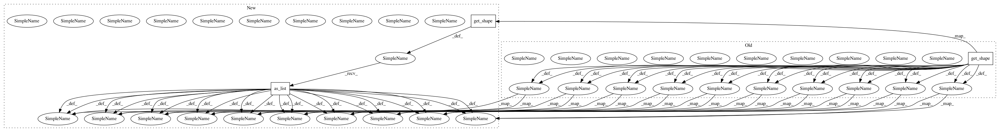

4287aef6a3a82436b4e3e156b22ede235eb4e6ba,texar/core/layers.py,,multihead_attention,#,949
Before Change
with tf.variable_scope(scope, reuse=reuse):
// Set the fall back option for num_units
if num_units is None:
num_units = queries.get_shape().as_list[-1]
// Linear projections
Q = tf.layers.dense(queries, num_units, activation=tf.nn.relu) // (N, T_q, C)
K = tf.layers.dense(keys, num_units, activation=tf.nn.relu) // (N, T_k, C)
V = tf.layers.dense(keys, num_units, activation=tf.nn.relu) // (N, T_k, C)
// Split and concat
Q_ = tf.concat(tf.split(Q, num_heads, axis=2), axis=0) // (h*N, T_q, C/h)
K_ = tf.concat(tf.split(K, num_heads, axis=2), axis=0) // (h*N, T_k, C/h)
V_ = tf.concat(tf.split(V, num_heads, axis=2), axis=0) // (h*N, T_k, C/h)
// Multiplication
outputs = tf.matmul(Q_, tf.transpose(K_, [0, 2, 1])) // (h*N, T_q, T_k)
// Scale
outputs = outputs / (K_.get_shape().as_list()[-1] ** 0.5)
// Key Masking
key_masks = tf.sign(tf.abs(tf.reduce_sum(keys, axis=-1))) // (N, T_k)
key_masks = tf.tile(key_masks, [num_heads, 1]) // (h*N, T_k)
key_masks = tf.tile(tf.expand_dims(key_masks, 1), [1, tf.shape(queries)[1], 1]) // (h*N, T_q, T_k)
paddings = tf.ones_like(outputs)*(-2**32+1)
outputs = tf.where(tf.equal(key_masks, 0), paddings, outputs) // (h*N, T_q, T_k)
// Causality = Future blinding
if causality:
diag_vals = tf.ones_like(outputs[0, :, :]) // (T_q, T_k)
tril = tf.contrib.linalg.LinearOperatorTriL(diag_vals).to_dense() // (T_q, T_k)
masks = tf.tile(tf.expand_dims(tril, 0), [tf.shape(outputs)[0], 1, 1]) // (h*N, T_q, T_k)
paddings = tf.ones_like(masks)*(-2**32+1)
outputs = tf.where(tf.equal(masks, 0), paddings, outputs) // (h*N, T_q, T_k)
// Activation
outputs = tf.nn.softmax(outputs) // (h*N, T_q, T_k)
// Query Masking
query_masks = tf.sign(tf.abs(tf.reduce_sum(queries, axis=-1))) // (N, T_q)
query_masks = tf.tile(query_masks, [num_heads, 1]) // (h*N, T_q)
query_masks = tf.tile(tf.expand_dims(query_masks, -1), [1, 1, tf.shape(keys)[1]]) // (h*N, T_q, T_k)
outputs *= query_masks // broadcasting. (N, T_q, C)
// Dropouts
outputs = tf.layers.dropout(outputs, rate=dropout_rate, training=context.is_train())
// Weighted sum
outputs = tf.matmul(outputs, V_) // ( h*N, T_q, C/h)
// Restore shape
outputs = tf.concat(tf.split(outputs, num_heads, axis=0), axis=2 ) // (N, T_q, C)
// Residual connection
outputs += queries
// Normalize
outputs = normalize(outputs) // (N, T_q, C)
return outputs
After Change
"""
with tf.variable_scope(scope):
if num_units is None:
num_units = queries.get_shape().as_list()[-1]
Q = tf.layers.dense(queries, num_units, activation=tf.nn.relu)
K = tf.layers.dense(keys, num_units, activation=tf.nn.relu)
V = tf.layers.dense(keys, num_units, activation=tf.nn.relu)
Q_ = tf.concat(tf.split(Q, num_heads, axis=2), axis=0)
K_ = tf.concat(tf.split(K, num_heads, axis=2), axis=0)
V_ = tf.concat(tf.split(V, num_heads, axis=2), axis=0)
outputs = tf.matmul(Q_, tf.transpose(K_, [0, 2, 1]))
outputs = outputs / (K_.get_shape().as_list()[-1] ** 0.5)
//not sure why there should be key_masks and query_masks
key_masks = tf.sign(tf.abs(tf.reduce_sum(keys, axis=-1)))
key_masks = tf.tile(key_masks, [num_heads, 1])
key_masks = tf.tile(tf.expand_dims(key_masks, 1), [1, tf.shape(queries)[1], 1])
paddings = tf.ones_like(outputs)*(-2**32+1)
outputs = tf.where(tf.equal(key_masks, 0), paddings, outputs)
if causality:
diag_vals = tf.ones_like(outputs[0, :, :])
tril = tf.contrib.linalg.LinearOperatorTriL(diag_vals).to_dense()
masks = tf.tile(tf.expand_dims(tril, 0), [tf.shape(outputs)[0], 1, 1])
paddings = tf.ones_like(masks)*(-2**32+1)
outputs = tf.where(tf.equal(masks, 0), paddings, outputs)
outputs = tf.nn.softmax(outputs)
query_masks = tf.sign(tf.abs(tf.reduce_sum(queries, axis=-1)))
query_masks = tf.tile(query_masks, [num_heads, 1])
query_masks = tf.tile(tf.expand_dims(query_masks, -1), [1, 1, tf.shape(keys)[1]])
outputs *= query_masks
outputs = tf.layers.dropout(outputs, rate=dropout_rate, training=context.is_train())
// Weighted sum
outputs = tf.matmul(outputs, V_)
outputs = tf.concat(tf.split(outputs, num_heads, axis=0), axis=2 )
//(batch_size, length_query, attention_size)
//residual connection
if num_units == queries.get_shape().as_list()[-1]:
outputs += queries
outputs = normalize(outputs)
return outputs
In pattern: SUPERPATTERN
Frequency: 3
Non-data size: 3
Instances
Project Name: asyml/texar
Commit Name: 4287aef6a3a82436b4e3e156b22ede235eb4e6ba
Time: 2017-12-11
Author: shore@pku.edu.cn
File Name: texar/core/layers.py
Class Name:
Method Name: multihead_attention
Project Name: tflearn/tflearn
Commit Name: ca3ebe149946fbbc56f1e5f275880aa898e706e8
Time: 2016-10-01
Author: simanek@spaceknow.com
File Name: tflearn/objectives.py
Class Name:
Method Name: weak_cross_entropy_2d
Project Name: asyml/texar
Commit Name: c8523b2dc735a1b82ca6170e6ca349defe9f77fc
Time: 2017-11-17
Author: shore@pku.edu.cn
File Name: txtgen/core/layers.py
Class Name:
Method Name: multihead_attention